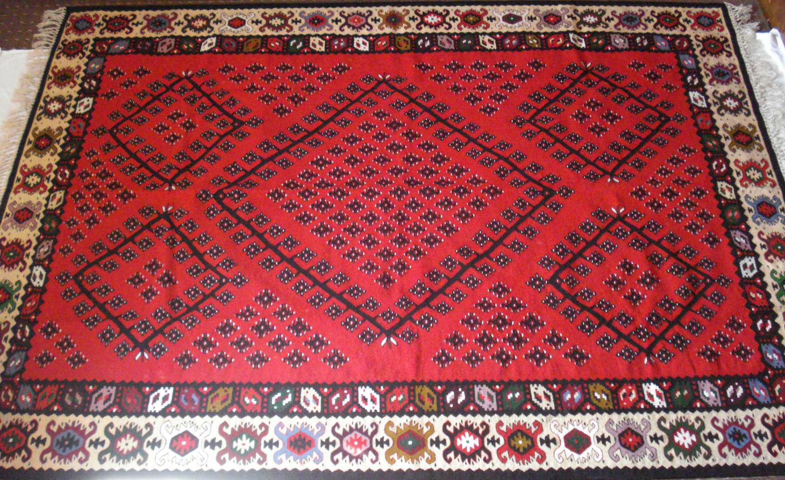

Tokom vekova, najvažnija zanatsko industrijska grana Pirota bila je ćilimarstvo. To je originalna tkačka delatnost ponikla u ovom gradu i obeležje je siromašnog dela ženskog stanovništva. Bitan preduslov za razvoj ćilimarstva je razvoj stočarstva kao privredne grane, zatim dovoljna količina vune kao sirovine i grad kao trgovački centar. Ti preduslovi omogućili su da proces proizvodnje pirotskog ćilimarstva od sveg početka bude zaokružen: ovde je gajen kvalitetan soj ovaca (na Staroj Planini), tu je prerađivana i bojena vuna, tehnika tkanja je bila usavršena, kao i osoben razboj i razvijena trgovina. Pirotsko ćilimarstvo prošlo je kroz nekoliko faza razvoja: Prva je doba njegovog formiranja u XVI veku, kada se radilo isključivo za domaće potrebe. Izrađivale su se jednostavne i neobojene prostirke: crge i šarenice. Druga faza obuhvata XVII i XVIII vek. U ovom periodu ćilimarstvo je znatno usavršeno i tkalo se na vertikalnom razboju, poznatom kao “pirotski razboj”. U trećoj fazi, XIX vek, pirotski ćilim je dostigao najviše tehničke i estetske vrednosti, pravim bogatstvom ornamenata, boja i motiva. Tako visok stepen ćilimarske proizvodnje u narednoj četvrtoj fazi značilo je potpuno ovladanu tehniku proizvodnje, visoko kvalitetnu izradu, savršenu kompoziciju ćilima i četiri jasno izdifirincirana dela: ćenar spoljni, ploča, ćenar unutrašnji i polje. Po nazivu šara u polju naziv je i celog ćilima. Sve do kraja XIX veka ćilimi su bojeni prirodnim (biljnim) bojama a potom veštačkim (industrijskim) jer su pružale više nijanse jedne boje. Na pirotskom ćilimu preovla|uje crvena boja u više nijansi – od svetlo-crvene do boje trule višnje. Spravljena je od krmeza i korišćena je za tkanje polja. Često je zastupljena plava boja, koja se dobija od prirodnog indiga sa malo žute boje. Zelena boja na pirotskom ćilimu tako|e je zastupljena u kombinaciji sa drugim nijansama a od sredine XIX veka u upotrebi je bela (do tada je korišćena lukova – drap boja). Boje na pirotskom ćilimu imaju prvenstveno teritorijalno-etničke odlike. Smirene su i tople, nekad prigušeno tamne, nekad kontrastne, ali uvek u okviru skladne kompozicije. Ornamentika na pirotskom ćilimu je uvek geometrijska (stilizovana ptica, cvet, gugutka ili predmet iz neposredne okoline tkalja). Uzor su im (bez obzira na uticaje drugih sredina i kultura) bili predmeti kojima su okružene, a kasnije su pravile i kombinacije od uzoraka donetih sa putovanja (romb, stilizovani mihrab, sofre, amajlike, nemačke kutije, bombe, kuveri, kašmir…). Najčešće korišćeni figuralni elementi bili su: gušter, plamen, tiče, škorpion, jelenak, gugutke… a vegetabilni motivi: razgranato drvo, đulovi u više varijanti, kubetija, narovi, venci (presek cvetova upletenih u venac), cvet (milovanka, karanfil, svekrvin jezik, lala, ruža metlice). Šare kod starih ćilima su sitnije i skladnije raspoređene a na novijim primercima šare su krupnije, katkad i neuspele stilizacije. Krajem XIX veka pojavili su se prvi trgovci koji su prodajom ćilima želeli da ostvare dobit. Među najstarije trgovce ubraja se Toma Petrović koji je osnovao “Pirotsko trgovačko ćilimarsko udruženje” 1894. godine. Početkom XX veka osnovano je i preduzeće “Pirotski ćilim – domaća industrija braće Garotić firme Džadžić – Hristić – Beraha”. Stizali su i pozivi za međunarodne izložbe i sajmove. Prvi put je pirotski ćilim izložen u Beču 1886. godine na Svetskoj izložbi, kada je izazvao čuđenje – kako to da je šara ista i sa lica i naličja. Samo od 1904. do 1940. godine, pirotski ćilim je izlagan na 26 sajmova od Turkoana, Londona, Barselone, Amsterdama, Napulja do Milana Pariza i Berlina. Za kvalitet proizvoda i svoju originalnost, pirotski ćilim je dobio veliki broj priznanja ali i zlatnih, srebrnih i bronzanih medalja. Pirotski ćilim je kao skupoceni poklon često darivan. Korišćen je u privatnim i državnim kontaktina, s predstavnicima vlasti, zatim kao nagrada, kao poklon i konačno kao deo devojačke spreme. Jer ćilim ne mora ni da se prostire na pod, ni da se stavi na krevet, iznad kreveta, ni na prozor kao draper, na sto kao stolnjak ili tišlajfer. Dovoljno je da se čuva u devojačkom sanduku, da se čuva kao amajlija kuće. Tako je ćilim kao prava retkost dospeo do mnogih manastira širom Srbije, u Bugarskoj (Rilski manastir), Grčkoj (Hilandar), na dvoru Obrenovića i Karađorđevića kada su tkalje po specijalnoj porudžbini tkale određene veličine (batale, dobatale ili po meri). Za potrebe gradskog stanovništva rađeni su “šestaci”, “smetenici”, “jan”, “sidžade”, “merka”, staze, šustikle, jastučnice, zavese i ukrasni ćilimi. Krajem XX veka proizvodnja pirotskog ćilima je znatno opala kao i prodaja iz više razloga. Tkanje ćilima je teško, mukotrpno i dugo. Zato je ćilim uvek bio skup proizvod. Nasuprot tome, rad ćilimarki uvek je bio jeftin i nikad adekvatno nagra|en. U ekonomskoj politici tradicionalni zanati nisu imali svoje mesto. Od juna 2003. godine pirotski ćilim kao proizvod zaštićen je od strane Zavoda za intelektualnu svojinu a na osnovu Zakona o geografskim oznakama porekla.